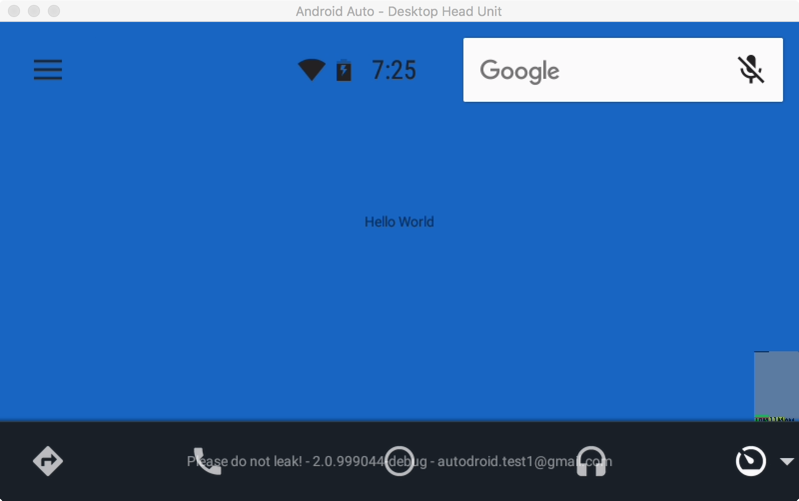
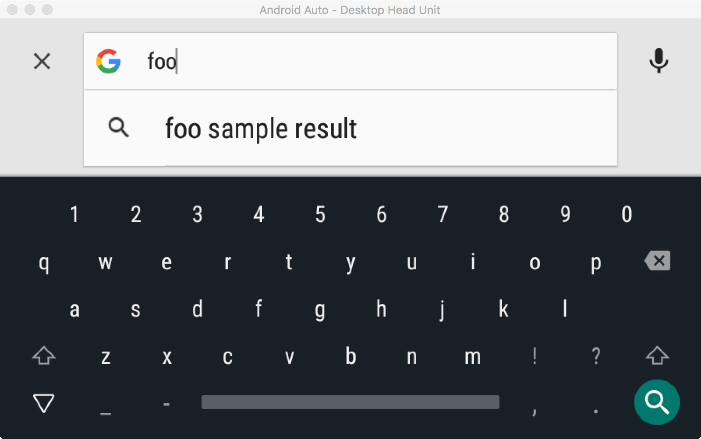
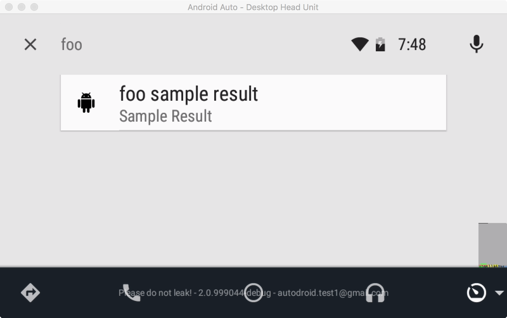

The Android Auto SDK also provides convenient templates that you can use to integrate search functionality into your application. Using a data driven API, you can let the SDK handle the UI elements of your search experience while providing the backing logic and data.
We use the SearchController to hook into the search facilities provided by the SDK. We register a callback that gets invoked upon various events such as text entry, search query submission, and search result selection. As a developer, you can use these callbacks to obtain search queries that you can then perform in the background and populate results.
The code below presents a trivial example of how to exercise these search APIs. All the logic here is synchronous as there is not much work being performed; however, in a real application, all of the work should be performed asynchronously.
Modify the code so that it looks like the snippet below:
HelloWorldCarActivity.java
private SearchCallback mSearchCallback = new SearchCallback() {
@Override
public void onSearchTextChanged(String s) {
List<SearchItem> suggestions = new ArrayList<>();
SearchItem item = new SearchItem.Builder()
.setType(SearchItem.Type.SUGGESTION)
.setTitle(s + getString(R.string.sample_result_suffix))
.build();
suggestions.add(item);
getCarUiController().getSearchController().setSearchItems(suggestions);
}
@Override
public boolean onSearchSubmitted(String s) {
final List<SearchItem> results = new ArrayList<>();
SearchItem result = new SearchItem.Builder()
.setType(SearchItem.Type.SEARCH_RESULT)
.setTitle(s)
.setSubtitle(getString(R.string.sample_result_subtitle))
.setIconResId(R.drawable.ic_android_black_24dp)
.build();
results.add(result);
getCarUiController().getSearchController().setSearchItems(results);
return false;
}
@Override
public void onSearchItemSelected(SearchItem searchItem) {
// TODO: Do something with the information in the search item.
}
};
@Override
public void onCreate(Bundle bundle) {
super.onCreate(bundle);
...
// Add this block to enable search.
SearchController searchController = getCarUiController().getSearchController();
searchController.setSearchHint(getString(R.string.search_hint));
searchController.setSearchCallback(mSearchCallback);
searchController.showSearchBox();
}
Compile, deploy, and run your application. Notice that the mic icon has now been replaced by a search box in the upper left corner. Selecting that search box will trigger the search experience within your application.

Upon entering the search, you will see a screen like the one below. As the user types more characters in the search box, your onSearchTextChanged() callback gets triggered repeatedly. The suggestions displayed in the list are the ones provided by the application by calling setSearchItems() with a type of SearchItem.Type.SUGGESTION.

After the user accepts a suggestion or selects the search button on the keyboard, the onSearchSubmitted() callback is invoked. From here, you can set a list of search results. You can leverage the stock search results screen or provide your own (the screen shown below is the default search results screen provided with the SDK).

Finally, after the user selects a result, the onSearchItemSelected() callback is invoked. You can use this callback to perform any follow on actions that may need to be performed from the search.
This is a very brief introduction into the APIs exposed by the SearchController. You are encouraged to read the full documentation and to take a look at all the features.